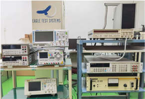
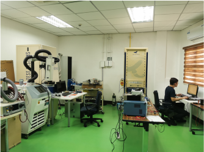
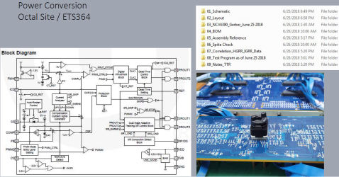

Test Development Services
Our Lab Equipment
Aside from our ATEs, we have the following equipment for device characterization and bench evaluations: Agilent 3458A, SR620, Agilent 34401A, Rigol DP832A and DS1104, Keithley 2400, Lecroy 6050A, Agilent E3634A, Temptronic TP041004, Temptronic 4300.
BackOur Staff Product Knowledge

- Power Management Products
- Linear Products
- Converters
- Multimedia Products
- ASICs
- Variable Capacitance
New Product Introduction Test Development

- Review Customer Test Specification
- Test Schematic Design
- BOM
- Layout and Assembly
- Coding
- HW and SW Debugging
- Correlation and GR&R
- Device Characterization at Temp.(as needed)
- Installation
- Qualification Lot Run